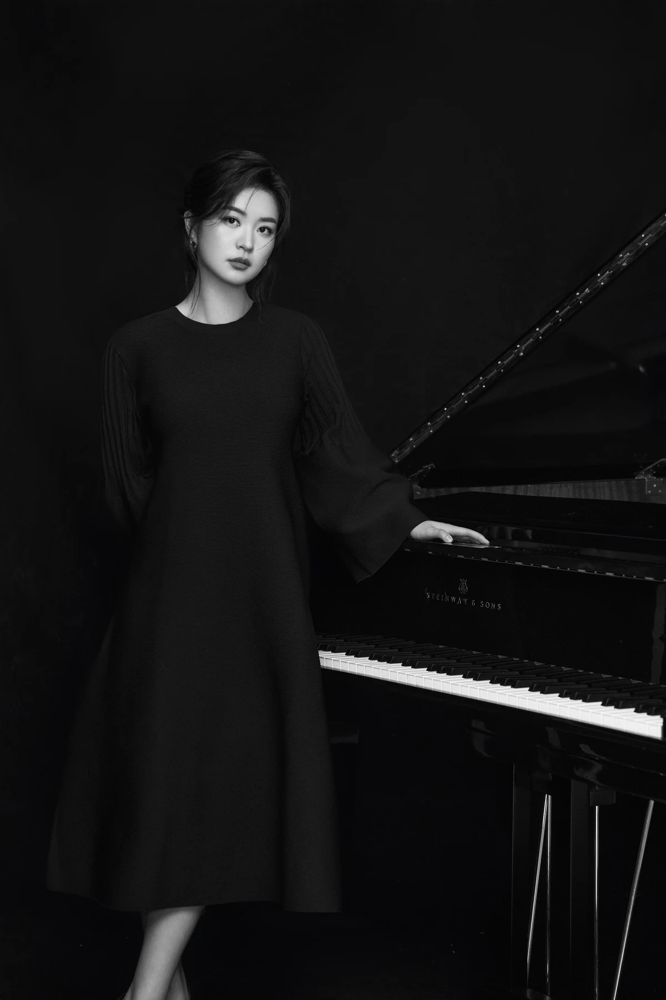
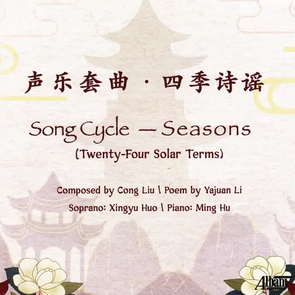

Watch performance
Ludwig van Beethoven
Piano Sonata No. 21
Op. 53, “Waldstein” · I. Allegro con brio
Pianist · Abu Dhabi, UAE
Doctor of Musical Arts
Piano Performance
University of Iowa
Piano Performance
University of Iowa, Iowa City, IA, USA
Piano Performance
University of Iowa, Iowa City, IA, USA
Piano Performance
Lawrence University, Appleton, WI, USA

Ming Hu is a pianist based in Abu Dhabi whose experience spans solo recitals, chamber music, vocal and choral performance, and piano education. Her professional background encompasses university, school, and community music settings in the United States, with additional performances in Europe and Asia.
Her appearances include the Piano Sundays series at the Old Capitol Museum in Iowa City, the Pella Opera House, and the University of Iowa’s Celebrating Beethoven: Complete 32 Piano Sonatas festival, in which she participated in 2021. In Europe, she performed at the Schubert Memorial at Atzenbrugg Castle in Austria and the Sempre Music International Festival in Völs am Schlern, Italy, in 2018.
Ming’s recording work includes Song Cycle – Seasons (Twenty-Four Solar Terms), recorded with soprano Xingyu Huo and released by Albany Records in August 2021. Composed by Cong Liu with poetry by Yajuan Li, the cycle brings together voice and piano around the twenty-four solar terms. Ming also participated in the work’s world premiere in 2020. Her experience with vocal repertoire includes art songs, arias, and musical theatre, alongside instrumental repertoire ranging from the Baroque period to contemporary music.
In 2021, she received Second Prize in Piano at the 5th International Moscow Music Competition. Earlier distinctions include Lawrence University’s Margaret Gary Daniels Keyboard Performance Award in 2016 and an Honorable Mention in Piano Level III at the Schubert Club Student Scholarship Competition in 2017. She was also a finalist in the University of Iowa Concerto Competition in 2017 and the Sempre Music International Festival Competition in 2018.
Ming earned her Doctor of Musical Arts in Piano Performance from the University of Iowa in 2024, after earning her Master of Arts in Piano Performance there in 2019. She studied piano performance with Ksenia Nosikova, pedagogy with Alan Huckleberry, and voice as a secondary area with Élise DesChamps. She received her Bachelor of Music in Piano Performance from Lawrence University in 2017, studying with Catherine Kautsky. Her doctoral research focused on the complete piano works of Su Lian Tan. The project included complete recordings of each work and an accompanying research paper.
From 2017 to 2023, Ming worked as a collaborative pianist at the University of Iowa, performing with singers and instrumentalists in rehearsals, juries, recitals, and recording projects. She also accompanied group classes and the string orchestra at the Preucil School of Music during the 2022–2023 academic year.
In New York State, she worked as a collaborative pianist at Eastman Community Music School from September 2023 to June 2025, accompanying youth, children’s, and adult choruses, as well as vocal and instrumental students. She served as choir accompanist at Finger Lakes Community College from January 2024 to June 2025.
Her teaching experience includes a University of Iowa teaching assistantship from 2017 to 2021, when she taught individual and group piano to music majors and non-majors. In 2023–2024, she taught elementary-school group piano through a programme in collaboration with Eastman Community Music School, developing a curriculum and preparing students for a semester showcase. At Key Lessons in Rochester in 2025, she maintained a studio of 26 students, ranging from young children to adults. Ming speaks English fluently and is a native Mandarin speaker.
Watch selected performancesAt the piano
Ludwig van Beethoven
Op. 53, “Waldstein” · I. Allegro con brio
Frédéric Chopin
F minor, Op. 52
Robert Muczynski
Op. 15

Recording · Albany Records · 2021
Twenty-Four Solar Terms
A song cycle by Cong Liu, tracing the twenty-four solar terms through voice and piano.
Contact
For professional enquiries, please use the form or email Ming directly.
ming-hu-piano@outlook.comAbu Dhabi, United Arab Emirates